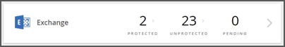
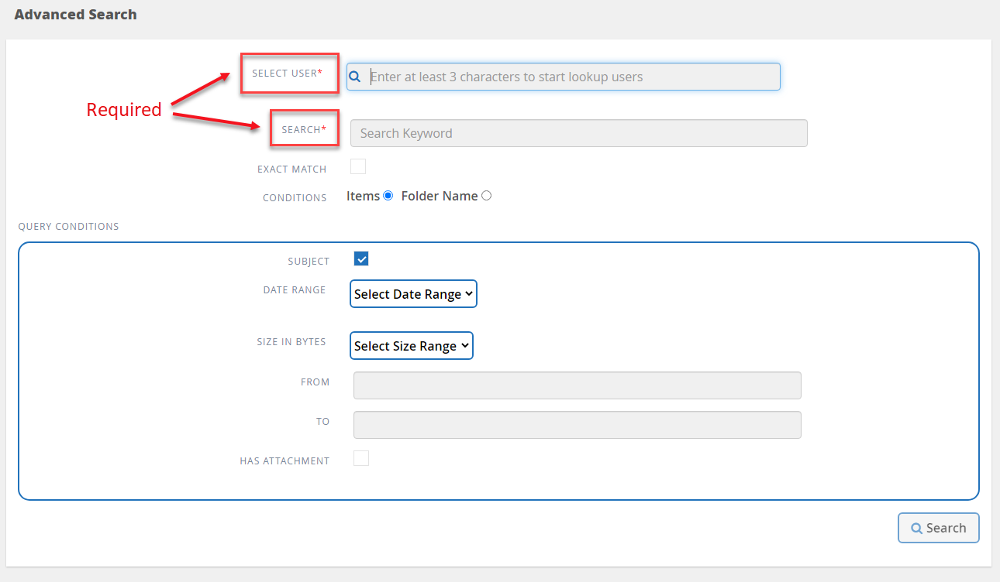
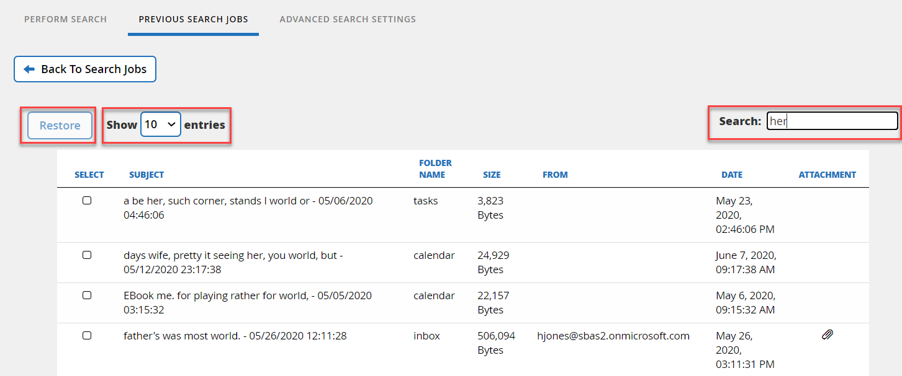

Performing a search
Contributors
 Download PDF of this page
Download PDF of this page
You can use inline search for Microsoft Exchange Online, Microsoft OneDrive for Business, and Microsoft SharePoint Online to find specific content.
Searching options for Microsoft Exchange Online
You can perform an inline search or an advanced search.
Performing an inline search inside Microsoft Exchange Online
You can perform an inline search within an individual mailbox for specific content. This also applies to mailboxes that are part of an Office 365 Group.
-
From the Dashboard, click the number above PROTECTED or UNPROTECTED in Exchange box.
 -
If you are searching PROTECTED mailboxes, click the email address for which you need to perform the search.
-
Select the category (Mail, Tasks, Contacts, Calendar, or Other) that you need to search.
-
Type a search string in the search field.
The search is automatically performed and results are displayed after the search string is entered.
-
-
If you are searching UNPROTECTED mailboxes, select the mailbox you want to search.
-
Type a search string in the search field.
The search is automatically performed and results are displayed after the search string is entered.
-
Using Advanced Search for Microsoft Exchange Online
You can search for individual or shared mailbox items and restore these items to their original mailbox. To enable this setting, refer to the June 2020 New features and updates release notes.
Setting advanced search settings
Advanced Search Settings gives users the option to enable or disable the search feature.
| Licensed and unlicensed users can use the advanced search feature if enabled. |
-
From the dashboard, click Advanced Search in the left menu.
-
Click Advanced Search Settings.
-
By default, the list displays all licensed users. Toggle between Show All Users and Show Only Licensed Users to filter the user type in the list.
-
Use the Search tool and type at least three characters to find a unique user.
-
Open Advanced Settings to enable search for archive mailbox items.
.
-
-
To enable a user, under the Advanced Search column, select On.
The next time you protect that enabled user in a full or incremental backup, you can perform a search of any new email items. -
To save your changes to the settings, click Save Settings.
-
To backup the enabled users, go to Scheduling a backup or changing backup frequency and remain on the User tab to select the users for backup.
Performing a search
Advanced Search gives users the option to perform a search for individual or shared mailbox items and restore these items to their original mailbox under Perform Search.
-
From the dashboard, click Advanced Search in the left menu.
-
Click Perform Search.
-
Enter information into the required fields with a red asterisk.
Optional fields: Conditions and Query Conditions.
-
Select User*: Type at least three letters in the user’s name to find the user you want to select.
-
Search*: Type at least three characters in a keyword. If you want to search a phrase, place the words in the phrase inside quotations (example: “Hello world”). If the words can be searched separately, quotes are not needed.
-
Exact match: Select if you want to search only for the exact keywords.
-
Conditions:
-
Items: Select items to search for all items in the mailbox.
-
Folder Name: Select folder name to search for items in a specific folder in the mailbox. Type the folder name in the text box provided.
-
-
Date range: From the date range drop down menu, select either Last 7 Days or Custom Range to input start and end date for the search.
-
Size in bytes: From the size in bytes drop down menu, select either Greater Than (>) or Lesser Than (<). Then enter the size in bytes.
-
From: Enter the email address for the sender.
-
To: Enter the email address for the receiver.
-
Subject: Select to search only by subject.
-
Has attachment: Select if the email item or items have attachments.
-
-
Click Search.
-
To find your search job, go to Finding Previous Search Jobs below.
Finding previous search jobs
Advanced Search gives users the option to find previous search jobs under Previous Search Jobs
-
From the dashboard, click Advanced Search in the left menu.
-
Click Previous Search Jobs.
-
Locate the search job you performed previously.
If zero search results appear, that means no items met the conditions you entered for your search. -
Click on the number of total search results to display them.
-
From the results display view, you can restore items, select how many entries show using the drop-down menu Show # entries, or search to narrow the results further.

Restored items go back to the original mailbox with the naming convention CC_search_MM.DD_time. To find the restore job, go to Jobs in the left menu. -
To exit the results display for your search, click on Back To Search Jobs.
Searching inside Microsoft OneDrive for Business
You can perform an inline search within an individual MySite for specific content.
-
From the Dashboard, click the number above PROTECTED in OneDrive box.
-
Click the MySite in which you need to perform the search.
-
Click the files that you need to search.
-
Type a search string in the search field.
The search is automatically performed and results are displayed after the search string is entered.
Searching inside Microsoft SharePoint Online
You can perform an inline search within an individual MySite for specific content. This also applies to sites that are part of an Office 365 Group.
-
From the Dashboard, click the number above PROTECTED in SharePoint box.
-
Click the site in which you need to perform the search.
-
Click the content category that you need to search.
-
Type the search string in the search field.
The search is automatically performed and results are displayed after the search string is entered.
 Edit on GitHub
Edit on GitHub